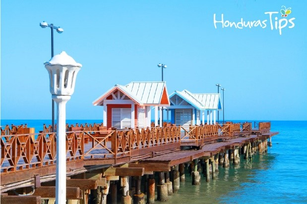
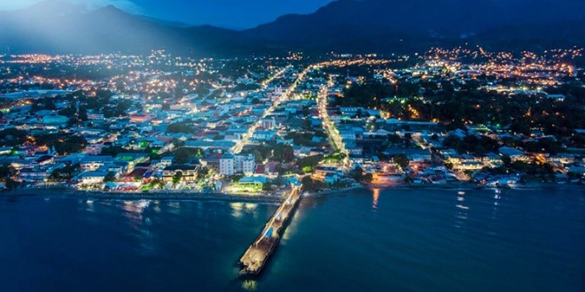

 Las primeras personas que habitaron este municipio eran mayormente tolupanes, que se organizaban en tribus. En el siglo XIX, los habitantes de este municipio se concentraron mucho en la actividad bananera. La Ceiba adquirió el título de municipio el 23 de agosto de 1877, su primer alcalde fue el señor Mariano Guiraud de origen francés.
 El nombre de la ciudad se debe a un gigantesco árbol de ceiba que se alzaba a orillas del mar Caribe, lugar donde hoy convergen la principal avenida y la primera calle. La grandeza de este árbol de ceiba era tan impresionante que los primeros pobladores (garífunas provenientes de la isla de San Vicente) aseguraban que era «la escalera que utilizaba cuando bajaba del cielo a visitar la Tierra. De hecho, había tantos árboles de Ceiba, o Ceibon, por lo cual los habitantes se acostumbraron a llamar este lugar «La Ceiba».
La ciudad puerto se comenzó a formar en el año de 1872, cuando el señor Manuel Hernández edificó una choza bajo el descomunal árbol. Alrededor de esta se fueron estableciendo otros vecinos, atraídos por la fuente de riqueza que les ofrecía en ese entonces; el cultivo del banano. El comercio de esta fruta atrajo la atención de las grandes compañías bananeras norteamericanas, las cuales comenzaron a establecerse en la ciudad y esta fue poblándose con inmigrantes nacionales y extranjeros. Esto dio lugar a una organización del conglomerado urbano, en el que aún se destaca como zona comercial la Avenida San Isidro. Con los años mejoró la infraestructura de la ciudad pero siempre se mantuvo; el casco histórico caribeño con sus amplias calles.
La Ceiba fue declarada municipio el 23 de agosto de 1877, durante el gobierno del Doctor Marco Aurelio Soto, siendo el núcleo del emporio bananero y eje sobre el cual giraba toda la economía regional. Esto llevó al nacimiento de nuevas y más grandes compañías nacionales. En 1902 llegó a calificarse a La Ceiba como el principal puerto de Honduras, gracias a las inversiones y considerarse como una ciudad modelo para el futuro de la nación2, Dana Munro, en 1918 escribió lo siguiente: sobre La Ceiba: "Lo más prospero de Honduras es la costa norte, La Ceiba esta segunda ciudad en importancia después de Tegucigalpa; y tiene más comercio exterior que todos los distritos juntos"3Previamente, al calor de la inversión extranjera y la explotación bananera, se fundó el Banco Atlántida y ta fue su éxito que en 1930 contaba con sucursales en Tegucigalpa, San Pedro Sula, Puerto Cortés, Tela y Trujillo, en el mismo año el periódico El Atlántico era la voz de la costa norte hondureña.